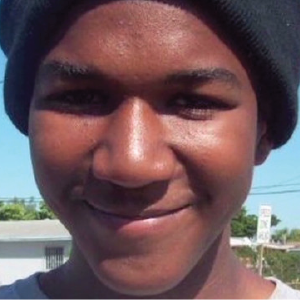
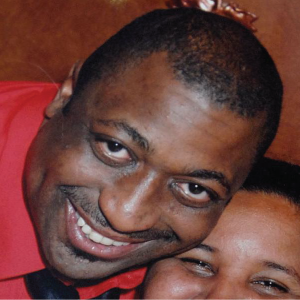
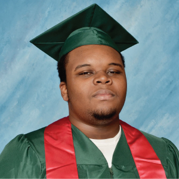
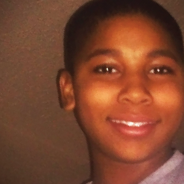
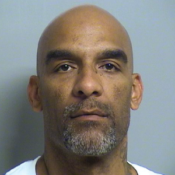
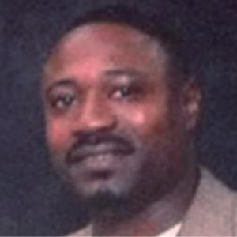

Trayvon Martin, 17
Location: Sanford, Fl.
On Feb. 26, 2012, Trayvon Martin was fatally shot by neighborhood watch captain,
George Zimmerman. On Martin’s walk home from a 7-Eleven, Zimmerman reported to
911 that Martin “looked suspicious” and followed him. Zimmerman was ordered not
to leave his vehicle, which he later disregarded. Martin was wearing a dark hoodie
and carrying a bottle of iced tea and a bag of Skittles that he purchased from
7-Eleven in his hood pocket. Martin was unarmed.
Martin’s death caused a national outcry for the justice of violence against Black lives.
The hashtag #BlackLivesMatter
was born. Moreover, the Movement Black Lives Matter was started.
Citations:
CNN |
The Washington Post |
CNN (Image)

Eric Garner, 43
Location: Staten Island, NY
On July 17, 2014, Eric Garner was put in a chokehold by NYPD officer Daniel Pantaleo on Bay Street
in Staten Island, NY. Garner was suspected of illegally selling cigarettes, but was unarmed. Garner,
who suffered from asthma, yelled his last words, “I can’t breathe,” trying to get officers to release
his neck from the chokehold. A medical examiner ruled Garner’s death a homicide from a chokehold.
Pantaleo was not indicted despite the fact that chokeholds are ruled illegal in New York.
The incident was also fully caught on camera by a bystander.
Social media erupted with the hashtag #ICantBreathe
to symbolize the struggle by Garner as well as the feeling of racial oppression.
Citations:
NY Post |
CNN |
International Business Times (Image)

Michael Brown, 18
Location: Ferguson, Mo.
On Aug. 9, 2014, Michael Brown was shot and killed by police officer Darren Wilson. Brown, who was
confirmed as unarmed, was fatally shot after confrontation with Wilson for walking in the street. Brown
lied in the street for four hours before authorities came to the scene. On November 24, 2014, the grand
jury decided not to indict Wilson, continuing the national outcry.
Brown’s death erupted protests nationwide, which have continued to this day. Social media
users hashtagged #DontShoot,
#TheyGunnedMeDown and
#NoJusticeNoPeace to show
support for Brown, his family and the struggle in Ferguson. Additionally, social media showed
strong interest in news portrayal of victims.
Citations:
NY Times |
NBC News |
NBC News (Image)

Tamir Rice, 12
Location: Cleveland, Ohio
On Nov. 22, 2014, 12-year-old Tamir Rice was playing in Cudell Recreation Center park when
he was shot by Timothy Loehmann. Rice was reported to have a gun by a bystander who
called the police, but the caller reported that the gun was “probably fake.” Rice has a airsoft
toy gun in his waistband, which Loehmann did not check for prior to shooting. Loehmann shot
Rice after leaving his moving patrol vehicle.
After the shooting, Rice’s 14-year old sister ran to the scene but was restrained by police. The
officers failed to apply first aid to Rice until roughly four minutes following the incident. Rice
died the following day, Nov. 23, 2014.
Social media continued outcry for the safety of Black youth in America. The shooting of Rice
came only two days before the decision of the grand jury to not indict Darren Wilson, the
officer who fatally shot Michael Brown.
Citations:
Vox |
Cleveland.com |
NBC News (Image)

Eric Courtney Harris, 44
Location: Tulsa, Okla.
On April 2, 2015 Eric Courtney Harris was shot by reserve deputy Robert Charles Bates.
Bates, 73, claims he meant to use a taser on Harris, but pulled his gun mistakingly. According
to the LA Times, Bates is a “wealthy insurance executive with close personal and political ties
to the sheriff.” Many accused Bates of “paying to play cop,” due to the numerous contributions
of money, cars and equipment to the Sheriff's Office.
Recently a tape of Harris’ arrest surfaced, exposing an officer on tape saying, “Fuck your
breath” to Harris. The video and death of Harris is the most recent spark of the Black Lives
Matter movement. The incident has started a social media conversation about who gets to be
a cop and continued the conversation about if the purpose of the law is meant to protect
everyone or a select few.
Citations:
ABC News |
CNN |
LA Times |
The Guardian |
Fox23 (Image)

Walter L. Scott, 50
Location: North Charleston, SC
On April 4, 2015, Walter L. Scott was pulled over for a broken tail light by officer Michael T.
Slanger but the incident would end in a fatal shooting. After been pulled over, Scott fled the
scene because he owed child support, a crime which can send people to jail. A bystander was
recording on a cell phone when the incident was happening.
Slager claimed that he feared for his life because Scott took his stun gun in a struggle.
However, the bystander’s video shows that Scott was running away and being fired at eight
times. Scott was struck by bullets three times in the back, once in the upper buttocks and
once in the ear. At least one bullet entered his heart.
Also on video, Slager is shown picking up what appears to be his stun gun and dropping it
near Scott’s motionless body. Social media is responding with a hashtag of his name:
#WalterScott
with the video of his shooting to generate media presence about the incident.
Citations:
ABC News |
NY Times |
Post and Courier |
The Root (Image)